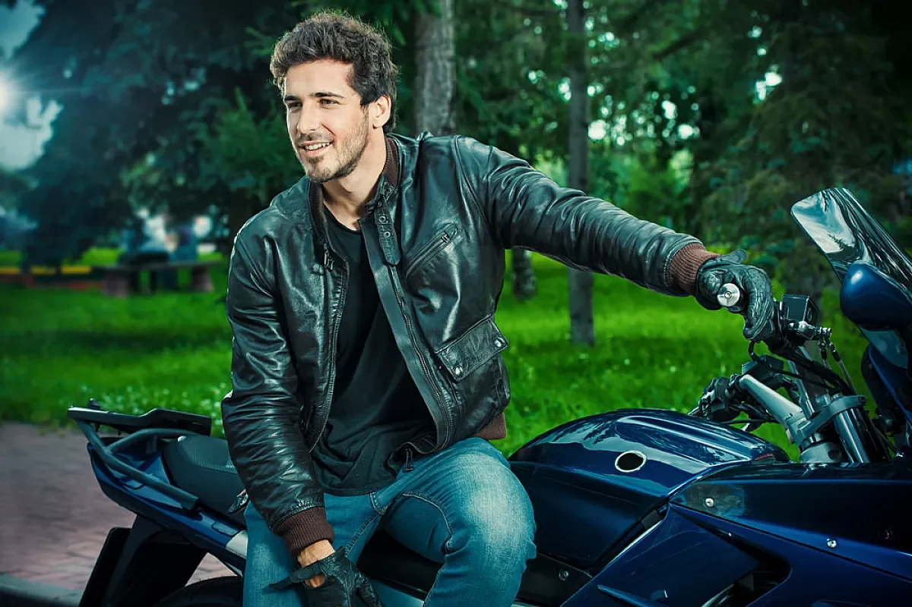
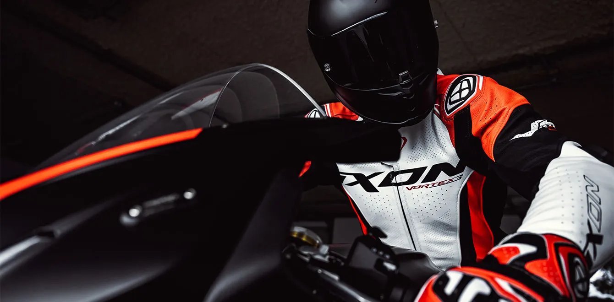
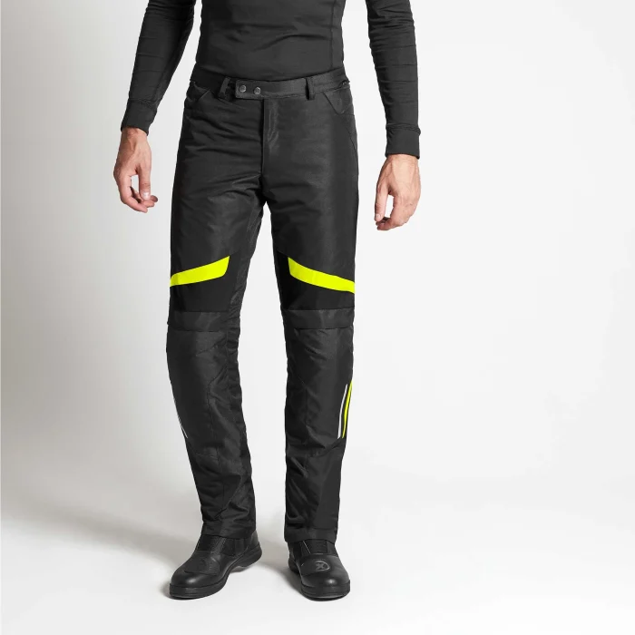
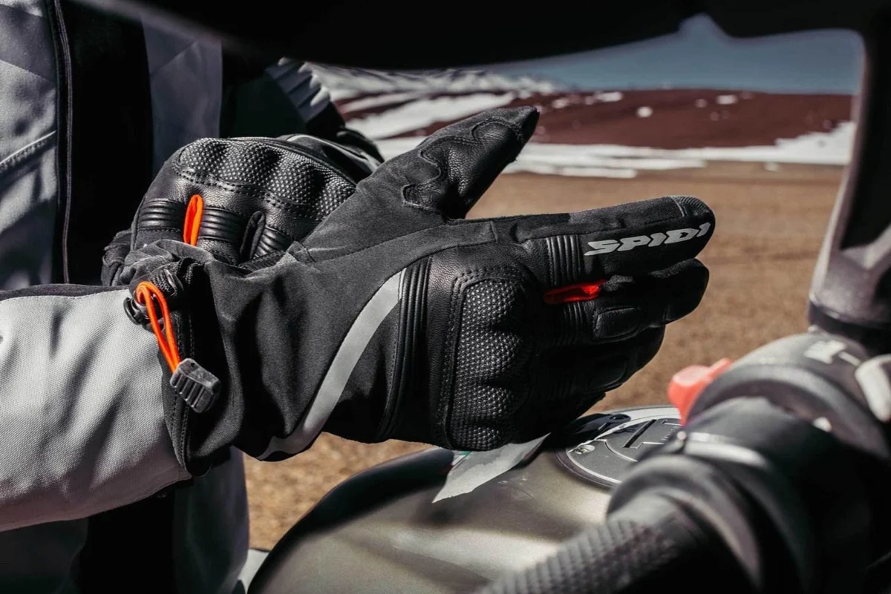
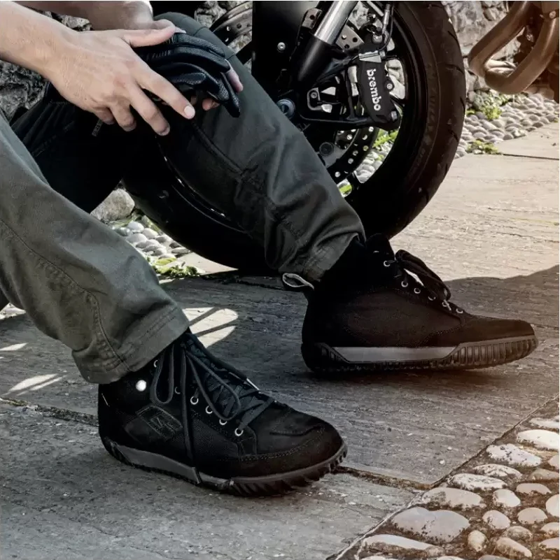
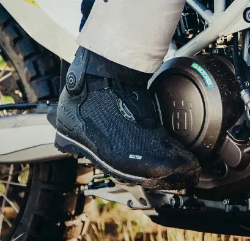
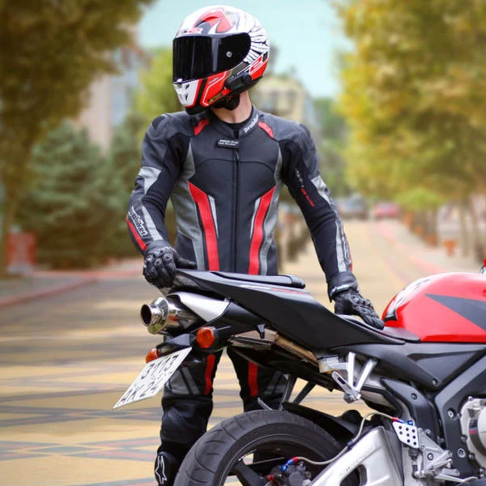

Parte superiore
Giacche
Tessuto e pelle, capi estivi, invernali e per la mezza stagione.
Esplora giaccheDalla città al viaggio, dalla mezza stagione alla pista. Giacche, pantaloni, guanti e calzature da provare.


Tessuto e pelle, capi estivi, invernali e per la mezza stagione.
Esplora giacche
Pantaloni tecnici e jeans moto: materiali e vestibilità da provare in camerino.
Esplora pantaloni e jeans
Estivi, invernali, di mezza stagione e racing. Provali pensando ai tuoi comandi.
Esplora guanti
Calzature dal taglio urbano e tecnico per i tragitti di tutti i giorni.
Esplora scarpe
Sport, turismo e adventure: trova la calzata adatta alla tua posizione di guida.
Esplora stivali
Intere e divisibili, da provare per la guida sportiva.
Esplora tuteLe immagini presentano il reparto. Modelli, taglie, prezzi e disponibilità si verificano direttamente in negozio.
Tragitti quotidiani, uscite del weekend o viaggi: il punto di partenza sono le tue abitudini.
Casco, occhiali o un capo che vuoi abbinare: confrontare gli oggetti insieme aiuta a scegliere.
Per modelli, colori e taglie, contatta il negozio. Possiamo verificare anche le disponibilità dei magazzini dei marchi di abbigliamento.
Sì. Scrivici quale categoria ti interessa oppure chiama il 0161 294987. Per un prodotto specifico indica marca e modello.
Le immagini descrivono le categorie. Disponibilità, taglie, prezzi e versioni dei prodotti si verificano con il negozio.
Prova, confronta, chiedi. Ti aspettiamo in Via Trino 200 a Vercelli.